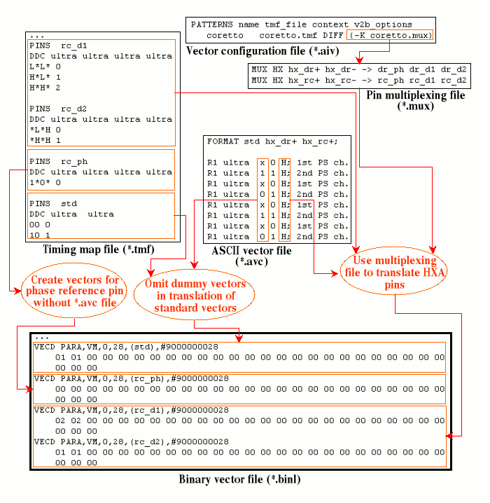

Vector Translation for HXA Multiplexing
In contrast to normal multiplexing, the (muxio) qualifier cannot be used for the vector translation of HXA multiplexing. Rather, you must pass the multiplexing file to v2b with the -K option. The pins in the ASCII vector file must be the HXA pins. Accordingly, the phase reference pins must be omitted.
It is possible to mix standard pins and multiplexed HXA pins in the same ASCII vector file. In this case, however, only every second (for 2-multiplexing) or every fourth (for 4-multiplexing) ASCII vector will be translated for the standard pins. In the other vectors, a dummy state character must be specified. This dummy character, which is simply a place holder, need not be defined in the timing map file.
The following figure shows how such a mixture of standard and HXA pins is handled by the vector translation:

Observe the following points in this example:
- The multiplexing factor is 2, and the (Pin Scale) x-mode factor is also 2.
- The ASCII vector file contains not only the positive pins of a drive and a receive pair of HXA pins, but also a standard pin.
- The character 'x' is used as the dummy character for the standard pin in the ASCII vector file.
The timing translation for this example is shown in Creating a Timing Setup for HXA.